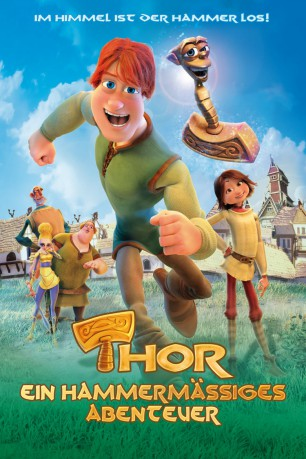

#9985 Thor - Ein hammermäßiges Abenteuer
Alternativ: Thor: Legend of the Magical Hammer (Englischer Titel)
 
 IMDB-Wertung: 5.1 / 10
IMDB-Wertung: 5.1 / 10  Metascore: 0
Metascore: 0 
Im hohen Norden lebt Thor mit seiner Mutter in einem kleinen Dorf. Der tollpatschige Schmied träumt von großen Abenteuern und wilden Schlachten. Stattdessen flickt er die Töpfe der Dorfbewohner. Und auch sein Vater Odin, der König der Götter im fernen Walhalla, scheint sich nicht für ihn zu interessieren. Doch das soll sich bald ändern.
Jahr: 2011
Dauer: 83 Minuten
FSK:
Land: Island Studio: Koch MediaTonspuren: DTS - ,
Untertitel:
Auflösung: 1080p (1920x816) Größe: 5048 MB
Genre: Komödie, Abenteuer, Fantasy, Animation/Trick, Familie
Regisseur: Óskar Jónasson, Toby Genkel, Gunnar Karlsson
Drehbuch: Friðrik Erlingsson, Snorri Sturluson, Snorri Sturluson, Toby Genkel, Óskar Jónasson
Soundtrack: Stephen McKeon
Darsteller:
- Paul Tylak als Crusher
- Nicola Coughlan als Edda
- Emmett J Scanlan als Sindri
- Mary Murray als Freyja
 Lesa Thurman als Mother
Lesa Thurman als Mother Liam O'Brien als Additional Voices
Liam O'Brien als Additional Voices- Justin Gregg als Thor
- Liz Lloyd als Hel
- Alan Stanford als Odinn
- J. Drew Lucas als Thrym
- Gary Hetzler als Grandfather
- Hillary Kavanagh als Old Age
- Keith Alexander als Additional Voices
- John Broderick als Additional Voices
- Rod Goodall als Additional Voices
- Liam Heffernan als Additional Voices
- Corey Macri als Additional Voices
- Andrew Mangan als Additional Voices
- Paul McCloskey als Additional Voices
- Steve McGrath als Additional Voices
Datei: X:\Kinder Filme (N-Z)\Thor - Ein hammermäßiges Abenteuer (2011, FSK, 1920x816).mkv seit 15.11.2018
Festplatte: Kinder-Filme+Trick
 Es gibt insgesamt 87 Filme in der Gruppe 'Kinder Filme (N-Z)'
Es gibt insgesamt 87 Filme in der Gruppe 'Kinder Filme (N-Z)'